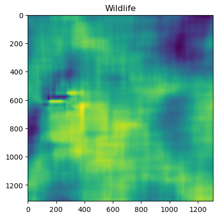
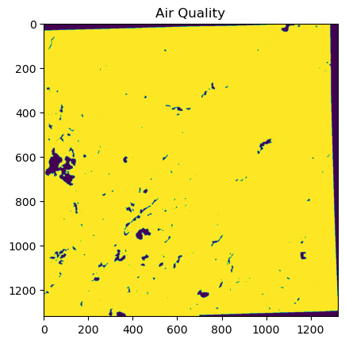
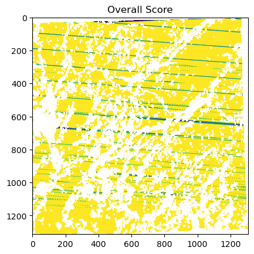

Module 2: Spatial Decision Making#
2.1. Introduction to Spatial Decision Making#
After seeing the components of spatial thinking, we can now move to the next phase of learning more about how we can use this power to solve our spatial decision problems.
Any decision problem with a spatial component can be considered as a spatial decision making problem. Sometimes they are so obvious because the final output is a spatial entity, but sometimes the intermediate steps make it a spatial decision itself.
In this chapter, we will focus on decision problems where we have multiple decision criteria. Let’s see what the characteristics of multiple criteria decision making are and what makes them unique!
2.2. Characteristics of Multiple Criteria Decision Making#
The roots of multiple criteria decision making can be traced back to the 18th century, although it wasn’t spatial back then! It is used to combine conflicting criteria into a single score.

Benjamin Franklin used a simple paper system (pro et contra Latin for “for and against”) for deciding important issues; pros on one side and cons against on the other. By striking out the arguments on each side with the same ranking, he determined the remaining arguments to be supported. Therefore, each decision making–whether spatial or not–needs a weighing mechanism.
2.3. Spatially Explicit#
Maps are like cheat sheets for spatial reasoning. They take abstract ideas—like road density or population clusters—and turn them into something we can see, analyze, and understand at a glance.
Michael Goodchild, in his “GIScience, geography, form, and process” paper, suggests that there are four tests that can be used to determine if a model is spatially explicit:
Change in the ranking of decision alternatives are directly related to change in spatial pattern of these alternatives
Decision alternatives can be geographically defined - not just “what to do?” but also “where to do it?”
Spatial concepts such as location, distance, contiguity, connectivity, adjacency, or direction should exist
Output of the decision outcome should be represented spatially
2.4. Hierarchical Structure of a Decision Problem#
When we try to make our spatial decisions, we first need to identify our goal(s). A decision goal specifies one or more objectives to achieve, such as the number of sites or regions to be selected. The goal also defines the phenomenon that is going to be modeled. Finally, our goal also identifies the purpose of spatial analysis.
 Some examples of spatial decision making goals are identifying the best site for a hazardous waste disposal facility, finding the shortest transportation route, and the best spatial pattern for an animal habitat.
Some examples of spatial decision making goals are identifying the best site for a hazardous waste disposal facility, finding the shortest transportation route, and the best spatial pattern for an animal habitat.
As seen in figure, each objective is connected with several attributes (criteria).
2.5. Example: Bike Docking#
Let’s assume the Boston municipality decided to contribute to green transportation and increase the accessibility for the public. They have 100 possible locations over the city and the outcome of this decision process can support five more ranking locations. However, the Metropolitan Transportation Authority is not sure which one is the best decision!

In this hypothetical example, can you specify the phenomenon and purpose of the analysis?
In this example:
The number of sites to be located is 5
The phenomena are the new bike docking stations
The purpose of this study to improve public access by supporting green transportation
Mirror, mirror on the wall, which one is the best decision of all?
How can we achieve this goal? As decision makers we are surrounded with a large number of decision alternatives—evaluated based on a set of criteria—and we might have different preferences—weights—for each alternative.
If we continue with the bike docking station example, we might try to find sites close to existing public transportation. Maybe a biker would like to travel a distance that they can’t bike, and at some point they may want to switch to the bus. Also, density and availability of bike routes are important to consider. So, in this case, we have two criteria:
Proximity to existing public transport
Density and availability of bike routes These alternatives are evaluated on the basis of multiple criteria. Some of the criteria may be qualitative, while others may be quantitative.
Sustainable planning of a hazardous waste disposal facility is a complex task involving a multitude of engineering, economic, social, environmental, and political aspects. In Spain, preliminary site screening for landfill sites is regulated by the European, national, and regional legislations and engineering guidelines on hazardous waste management. According to these regulations, landfill sites cannot be located:
Close to urban centers or outside urban centers
Close to potentially crowded places such as schools, hospitals, or commercial centers
Moreover, due to potential conflicts between local authorities, candidate land parcels should be linked to a unique municipality.
Additionally, some environmental and economic factors play an important role in the decision making process. For example, the optimal areas to locate a landfill facility are clay and gypsum deposits, as leakage into underground water and surrounding land is minimized. Land suitability also decreases as slope increases. At a 15% slope, land is not suitable, since the landfill design, construction, and operation will be so expansive. Lastly, estimated expropriation costs are considered in the analysis depending on land use and vegetation coverage.
How many objectives do we have for this land suitability problem?
As you have noticed, some of the objectives maximize criterion and some require minimizing it. Now let’s see how we can achieve this!
2.6. One Recipe to Cook Them All#
So the question becomes: how are we going to solve our spatial decision making problems?
Luckily, no matter how complex our alternatives, how many alternatives that we are dealing with, or how many decision makers will be involved in, the generic recipe is the same for all spatial decision making problems.
Let’s take a look at the instructions first, then see the recipe in action.
Spatial Decision Making Steps:
Define the set of evaluation criteria (map layers)
Standardize each criterion map layer
Define the criterion weights (relative importance) assigned to each criterion map
Construct the weighted standardized map layers, multiplying standardized map layers with their corresponding weights
Generate the overall score for each alternative using add overlay operations on the weighted standardized map layers
Rank the alternatives according to their overall score—the highest score is the best alternative
If you are satisfied, then well-done! You can now implement your best solution!
Hands-On Activity: Land Use Suitability for Conservation Reserve Program#
Let’s look at a land use suitability example taken from Şalap-Ayça and Jankowski (2008).
In the United States, the Conservation Reserve Program (CRP) executes land use evaluation and improves conservation by renting highly erodible cropland or other environmentally sensitive acreage from farmers and ensuring plantation of species that will improve environmental quality.

CRP is achieved by a score based system called the Environmental Benefit Index (EBI). It is based on five environmental factors: wildlife, water quality, erosion, enduring benefits, and air quality. Every factor has varying levels of preferences.
Decision makers come up with different preferences for each criteria and combine them into a single overall score. When the overall score has higher ranks for the predetermined threshold value for the enrollment period, the land unit is left uncultivated for that term. Even though the benefits of CRP have been observed for over 30 years, unfortunately, only the most qualified land units are selected for incentive payments due to fiscal limitations.
Therefore, the overall objective becomes to define the most qualified areas that will maximize the conservation benefits by considering the multiple factors together with their varying preferences; this makes the EBI a typical example of a multi-criteria decision-making problem.
Let’s see how we can apply our generic recipe steps on this real case study.
How many criteria do we have?
What are the alternatives in this problem?
What is the objective?
Recipe Step 1: Define the set of evaluation criteria#
The evaluation criteria for this land use example are:
Wildlife
Water Quality
Erosion
Enduring Benefits
Air quality
For this case, let’s assume that all these layers are given as an ASCII file for us. ASCII files are plain text files that store text using the American Standard Code for Information Interchange (ASCII) encoding. Each character in the file—letters, numbers, and symbols—is represented by a unique 7-bit binary code. They are widely readable by most computer programs and operating systems.
You can download the files from our Github Repository. Let’s visualize our ASCII text files and see what they look like!
As always, we have to first import the necessary libraries before starting. We will use NumPy for numerical operations with grid-like data, as well as Matplotlib for plotting the data.
# Import numpy and matplotlib libraries
import numpy as np
import matplotlib.pyplot as plt
Now, we can load the data from the provided text files as NumPy arrays and visualize it using Matplotlib plots. NumPy arrays are a basic data structure of Python; they are multi-dimensional lists of numbers of one data type (ie. all integers or floats) that can easily be mathematically and computationally manipulated in a grid-like array form.
Let’s practice creating arrays! We will start by creating a two-dimensional (2D) list to convert into an array:
# Create a 2D list (list of lists)
list_2d = [[1.0,2.0,3.0,4.0],[4.0,3.0,2.0,1.0]]
# Print the 2D list to see what it looks like
print(list_2d)
# Check the data type of the list
type(list_2d)
[[1.0, 2.0, 3.0, 4.0], [4.0, 3.0, 2.0, 1.0]]
list
Now let’s convert the list into a NumPy array:
# Convert the 2D list to a NumPy array
array = np.array(list_2d)
# Print the NumPy array to see what it looks like
print(array)
# Check the data type of the NumPy array
type(array)
[[1. 2. 3. 4.]
[4. 3. 2. 1.]]
numpy.ndarray
With the array data type, we can easily extract additional information about our array, including the dimensions (number of axes), shape (number of rows and columns), total number of elements, and data type:
# Print the dimensions of the array
print(array.ndim)
# Print the shape of the array (rows, columns)
print(array.shape)
# Print the size of the array
print(array.size)
# Print the data type of the array
print(array.dtype)
2
(2, 4)
8
float64
For our ASCII files, each text file contains metadata—additional information about our data such as the number of rows and columns—for the first 6 lines, followed by a large array of numbers for our criteria data. We can read in our desired data as NumPy arrays using the NumPy method loadtext() and specifying parameters like the file name (as a string) and the number of rows to skip (skiprows).
Once the data is loaded in as an array of numbers, we can plot the data using the Pyplot submodule in Matplotlib. The title() function in Matplotlib Pyplot is used to add a title to a plot or other Axes object. The imshow() method displays images of 2D data.
The text files are named in numerical order of the criteria listed above, so the data for the Wildlife layer is stored in a file named n1.txt. Let’s see what it looks like!
# Load the Wildlife data from the text file
nArray = np.loadtxt("n1.txt", skiprows=6)
# Plot the data
plt.title("Wildlife")
plt.imshow(nArray)
<matplotlib.image.AxesImage at 0x108eb68a0>

Let’s check the Air Quality layer as well. We can change the file name to n5.txt to do so.
# Load the Air Quality data
nArray = np.loadtxt("n5.txt", skiprows=6)
# Plot the data
plt.title("Air Quality")
plt.imshow(nArray)
<matplotlib.image.AxesImage at 0x11bddad80>

Great! Now we have an understanding of what our criteria layers look like. Let’s move to the next step of standardization!
Recipe Step 2: Standardize each criterion map layer#
In order to understand what standardization is and why we need it, let’s check the maximum and minimum values of each layer.
For a single criterion, notice how we can get the minimum and maximum. Also notice that we have some values with no data in this raster, which is assigned as -9999. We can use the numpy mask method to eliminate -9999 from becoming the minimum value.
A masked array is a specialized NumPy array that has an associated mask, a boolean array of the same shape as the data, where True indicates a masked (invalid or missing) value and False indicates a valid (unmasked) value. Boolean operators evaluate whether a variable or expression is True or False. Booleans can be compared using and or or operators; the or operator results in True if either Boolean is True, while the and operator results in True if both Booleans are True.
a = True
b = False
print(a or b)
print(a and b)
True
False
We can test the equivalance of two expression by using the is keyword and == operation as well. The difference between them is that == compares the values of the variables inside the objects, whereas is compares the objects themselves.
list1 = [8,18,6,48]
list2 = [8,18,6,48]
# Check if list1 and list2 are the same object
print(list1 is list2)
# Check if list1 and list2 have the same values
print(list1 == list2)
False
True
For our data, our mask will be a boolean of the array data being equal to -9999 so that we can hide values that are True under the boolean mask.
# Load the Wildlife data
nArray = np.loadtxt("n1.txt", skiprows=6)
# Mask the no data values (-9999)
masked_nArray = np.ma.array(nArray, mask=(nArray==-9999))
# If you print the masked array, it will show the data without the -9999 values
print(masked_nArray)
[[22.992 22.885 22.781 ... 17.525 17.595 17.667]
[23.188 23.09 22.995 ... 17.521 17.594 17.67]
[23.362 23.27 23.174 ... 17.517 17.594 17.674]
...
[29.758 29.851 29.917 ... 37.033 37.02 37.0]
[29.716 29.809 29.875 ... 37.085 37.073 37.054]
[29.671 29.764 29.831 ... 37.131 37.12 37.102]]
Now that we have cleaned up our array via masking, we can determine the maximum and minimum using the max() and min() methods, respectively.
# Determine the maximum and minimum values of the Wildlife criterion
nmax = masked_nArray.max()
nmin = masked_nArray.min()
# Print the maximum and minimum values to see!
print("Maximum of Wildlife criterion is: " +str(nmax)+ " and minimum of Wildlife criterion is: " +str(nmin))
Maximum of Wildlife criterion is: 42.052 and minimum of Wildlife criterion is: 12.826
Now let’s determine the minimum and maximum values from all five of the criteria. To iterate through all five criteria text files, we can write a for loop and print different results using if-else statements.
If-else statements are conditional statements that enable the evaluation of multiple conditions in a sequential manner; inputs can be run through different lines of code and render different outcomes depending on specific conditions. The statement structure starts with the if: keyword, followed by a block of code to run if that condition is met. If the condition evaluates to True, the lines of code in the block are run. If the condition evaluates to False, the lines of code are skipped, and the program moves on to the next statement after the if structure.
Let’s see a basic example:
x=0
if x < 0:
print ("x is negative")
elif x == 0:
print ("x is zero")
else:
print ("x is positive")
x is zero
That was easy. Now let’s combine if-else statements with finding maximums. How can we get the maximum of the list? Let’s first see how machines can find the maximum in a binary operation:
# Determine the maximum value from list1 compared to the initial maximum value
# list1 = [8,18,6, 48]
# Set the initial maximum value
maximum = 0
# Print the new maximum while iterating through the list
if list1[0] > maximum:
# If the 0th element of list1 is greater than the current maximum, update and print the new maximum
maximum = list1[0]
print ("New maximum is: ", maximum)
if list1[1] > maximum:
# If the 1st element of list1 is greater than the current maximum, update and print the new maximum
maximum = list1[1]
print ("New maximum is: ", maximum)
if list1[2] > maximum:
# If the 2nd element of list1 is greater than the current maximum, update and print the new maximum
maximum = list1[2]
print ("New maximum is: ", maximum)
if list1[3] > maximum:
# If the 3rd element of list1 is greater than the current maximum, update and print the new maximum
maximum = list1[3]
print ("New maximum is: ", maximum)
New maximum is: 8
New maximum is: 18
New maximum is: 48
Finally, we can combine if-else statements and maximums with for loops to make this iteration through lists more efficient:
# Determine the maximum value from list1 compared to the initial maximum value
# list1 = [8,18,6, 48]
# Set the initial maximum value
maximum=0
# Iterate through the list and print the new maximum
for i in range(0, len(list1)):
# For each element in the list, if the current value is greater than the maximum, update and print the new maximum
if list1[i] > maximum:
maximum=list1[i]
print ("New maximum is: ", maximum)
New maximum is: 8
New maximum is: 18
New maximum is: 48
Now let’s apply this to our EBI data to print the the criterion maximums for the 1st and nth criterions:
# Create a for loop to determine the max and min of each criterion
for i in range(1, 6):
nArray = np.loadtxt("n"+str(i)+".txt", skiprows=6)
masked_nArray = np.ma.array(nArray, mask=(nArray==-9999))
nmax = masked_nArray.max()
nmin = masked_nArray.min()
if i == 1:
print("Maximum of "+str(i)+"st criterion is: " +str(nmax)+ " and minimum of "+str(i)+"st criterion is: " +str(nmin))
else:
print("Maximum of "+str(i)+"th criterion is: " +str(nmax)+ " and minimum of "+str(i)+"th criterion is: " +str(nmin))
Maximum of 1st criterion is: 42.052 and minimum of 1st criterion is: 12.826
Maximum of 2th criterion is: 60.0 and minimum of 2th criterion is: 5.0
Maximum of 3th criterion is: 100.0 and minimum of 3th criterion is: 0.0
Maximum of 4th criterion is: 22.253 and minimum of 4th criterion is: 1.116
Maximum of 5th criterion is: 45.0 and minimum of 5th criterion is: 0.0
Nice job! Now, as you have noticed, we have various maxima. Namely, when we determine the maximum wildlife for a pixel, it is not the same value for air quality. After all, we can’t add apples and oranges, right? The criteria need to be standardized in order to make further addition operations.
The standardization procedure involves transforming the raw data into standardized scores. First, the maximum and minimum values from the raw data layer need to be determined (luckily we already did that!). Then, the following rules apply:
If we need to minimize the criterion: take the difference between maximum value and the cell value and divide it by the range (difference between minimum and maximum): $\( \text{standardized value} = \frac{\text{maximum} - \text{cell value}}{\text{range}} \)\( If we need to **maximize** the criterion: take the difference between the cell value and minimum value and divide it by the range (difference between minimum and maximum): \)\( \text{standardized value} = \frac{\text{cell value} - \text{minimum}}{\text{range}} \)$
The major advantage of this procedure is that the scale of measurement varies precisely between 0 and 1 for each criterion. The worst standardized score is always equal to 0, and the best score equals 1.0.
Let’s try this standardization process with the Wildlife layer by maximizing the criterion.
# Load the Wildlife data
nArray = np.loadtxt("n1.txt", skiprows=6)
# Mask the no data values (-9999)
masked_nArray = np.ma.array(nArray, mask=(nArray == -9999))
# Determine the maximum and minimum values of the Wildlife criterion
nmax = masked_nArray.max()
nmin = masked_nArray.min()
# Standardize by maximizing the criterion
nrange = nmax - nmin
standardizednArray = (masked_nArray - nmin) / nrange
# Determine the standardized maximum and minimum values
nstdmax = standardizednArray.max()
nstdmin = standardizednArray.min()
# Print the standardized maximum and minimum values to see!
print("Standardized maximum of Wildlife criterion is: " + str(nstdmax) + " and standardized minimum of Wildlife criterion is: " + str(nstdmin))
Standardized maximum of Wildlife criterion is: 1.0 and standardized minimum of Wildlife criterion is: 0.0
To standardize all of the criteria values, we can use a for loop again.
# Create a for loop to standardize and determine the standardized max and min of each criterion
for i in range(1, 6):
nArray = np.loadtxt("n"+str(i)+".txt", skiprows=6)
masked_nArray = np.ma.array(nArray, mask=(nArray==-9999))
nmax = masked_nArray.max()
nmin = masked_nArray.min()
nrange = nmax - nmin
standardizednArray = (masked_nArray - nmin) / nrange
nstdmax = standardizednArray.max()
nstdmin = standardizednArray.min()
print("Standardized maximum is: " + str(nstdmax) + " and standardized minimum is: " + str(nstdmin))
np.savetxt("stdn" + str(i) + ".txt", standardizednArray, fmt='%1.3f', delimiter=' ')
Standardized maximum is: 1.0 and standardized minimum is: 0.0
Standardized maximum is: 1.0 and standardized minimum is: 0.0
Standardized maximum is: 1.0 and standardized minimum is: 0.0
Standardized maximum is: 1.0 and standardized minimum is: 0.0
Standardized maximum is: 1.0 and standardized minimum is: 0.0
Well done! Now we are ready for the next step of weighting!
Recipe Step 3: Define the criterion weights#
Criterion weights tell us how important one criterion is over the other, relatively. For example, if the decision makers’ consensus is that protecting wildlife is the most important among all, then that criterion takes the highest weight. Criteria weights range from 0 to 1. No matter how we distribute our preference among the criteria, the weight sum always equals to 1—this is because there is always a trade-off between criteria. If you are preferring one over another, then the rate of the latter one would be inversely proportional.
There are various consensus building tools to decide the weights, including Analytical Hierarchy Process, Fuzzy Aggregate, Ordered Weighted Average, and Outranking/Concordance Methods. However, for this example, we will proceed with the following weights for each criterion:
Criterion |
Weight |
|---|---|
Wildlife |
0.22 |
Water Quality |
0.22 |
Erosion |
0.17 |
Enduring Benefits |
0.17 |
Air Quality |
0.22 |
By looking at these weights, we can tell that Wildlife, Water Quality, and Air Quality are considered slightly more important than Erosion and Enduring Benefits. Let’s see how we can reflect our preferences.
Recipe Step 4: Construct the weighted standardized map layers#
If you remember, we generated standardized layers and saved them. Now, it is time to construct the weighted standardized map layers. In multi-criteria decision making literature, this method is referred to as Simple Additive Method (SAM) or Weighted Linear Combination (WLC).
One advantage of WLC is that the method can easily be implemented within the GIS environment using map algebra operations. And the formula is simple too:
\[ \text{weighted standardized layer} = \text{criterion weight} * \text{criterion value} \]
Let’s see how we can construct weighted standardized layers.
# Define the weights for each criterion
w1 = 0.22
w2 = 0.22
w3 = 0.17
w4 = 0.17
w5 = 0.22
# Load the standardized Wildlife data
c1 = np.loadtxt("stdn1.txt")
# Mask the no data values (-9999)
c1 = np.ma.array(c1, mask=(c1==-9999))
# Calculate the weighted standardized map layer using the WLC method
weighted_std = w1 * c1
Now let’s write a for loop again to construct all the weighted standardized criteria map layers.
# Define the weights for each criterion in a list
weight_list = [w1, w2, w3, w4, w5]
# Create a for loop to construct the weighted standardized layer for each criterion
for i in range(1, len(weight_list)):
c = np.loadtxt("stdn" + str(i) + ".txt")
c = np.ma.array(c, mask=(c==-9999))
weighted_std = weight_list[i-1] * c
Recipe Step 5: Generate the overall scores#
Now it’s time to calculate the overall score for each alternative. Namely, we need to overlay and see where we have the maximum of all criteria. This operation is another basic algebraic operation-sum:
\[ \text{overall score} = \Sigma(\text{weight} * \text{criteria value}) \]
Sigma (\( \Sigma \)) is a sum operator in mathematics. That means we need to first multiply criterion value with criterion weight, then repeat this for all criteria. Once we have the weighted layers, we need to sum them up to get the total score.
To sum all the weighted standardized layers and get an overall score, we need to first create an empty array of zeros as a placeholder for the actual calualted scores. For our data, we will specify the shape of this array to have 1314 rows and 1308 columns to match the shape of our criterion layer data:
# weight_list = [w1, w2, w3, w4, w5]
# Initialize an empty array to hold the overall scores
overall = np.empty([1314, 1308])
# Create a for loop to construct the weighted standardized layer for each criterion
for i in range(1, len(weight_list)+1):
c = np.loadtxt("stdn" + str(i) + ".txt")
c = np.ma.array(c, mask=(c==-9999))
weighted_std = weight_list[i-1] * c
overall = weighted_std + overall
# !!! EDIT: ERROR because OVERALL = 1308 cols but WEIGHTED_STD = 1322 cols !!!
# Plot the overall scores
plt.title("Overall Score")
plt.imshow(overall)
<matplotlib.image.AxesImage at 0x11da4ed50>

Recipe Step 6: Rank the alternatives#
The final map seems promising, but how are we going to decide which is best? Usually a ranking method is performed to get the optimum alternative. Here, since we don’t have a specific number of cells or size of land units to select, we will just rank the cell values so that we can visualize where we have higher score clusters.
The rankdata() method from the SciPy Stats library will help us do so by assigning ranks to each element within an array or sequence based on its value relative to the other elements. Ranks typically start from 1 for the smallest value, and different ranking methods can be specificied through the method argument. For our EBI data, we will use the dense ranking method to assign consecutive ranks without gaps for tied elements.
This function will return an array of rankings equal to the size of the input array, so we can apply the reshape() method afterwards to change the shape or dimensions of an array to match that of our desired overall scores array.
# Import the necessary libraries for ranking
from scipy.stats import rankdata
# Rank the overall scores using the dense ranking method
ranked_overall = rankdata(overall, method='dense').reshape(overall.shape)
# Print the ranked overall scores to see what this new array loos like!
print(ranked_overall)
[[ 41189 41189 41189 ... 41189 41189 41189]
[ 41189 41189 41189 ... 41189 41189 41189]
[ 41189 41189 41189 ... 41189 41189 41189]
...
[ 72433 72788 77910 ... 41189 41189 41189]
[ 73237 73740 75767 ... 41189 41189 41189]
[129944 131254 152227 ... 41189 41189 41189]]
The reshape() method, which returns a new array, is not to be confused with the resize() method, which changes the array itself and does not return anything. Let’s take a look at the difference:
array = np.array(list_2d) # array([[1., 2., 3., 4.], [4., 3., 2., 1.]])
print(array)
# Reshape the array to have 4 rows and 2 columns - this will not change the original array
array_reshaped = array.reshape(4,2)
print(array_reshaped)
print(array)
# Resize the array to have 4 rows and 2 columns - this will change the original array
array.resize(4,2)
print(array)
[[1. 2. 3. 4.]
[4. 3. 2. 1.]]
[[1. 2.]
[3. 4.]
[4. 3.]
[2. 1.]]
[[1. 2. 3. 4.]
[4. 3. 2. 1.]]
[[1. 2.]
[3. 4.]
[4. 3.]
[2. 1.]]
Recipe Step 7: If you are satisfied, well-done!#
If this analysis were performed on a vector layer, the output might have been a single feature. In a raster cell, you might be interested in multiple cells. In order to perform such analyses, you should start your exploratory analysis by observing the best scoring cells. Here, we can see the highest scoring cells are located in the right top corner of our study area. Thus, we can focus on the agricultural units located there during the next EBI period.
Exploration:#
Now, it’s your time to explore with different criteria weights to see how things are changing. Try the following weights and compare the outputs. How do the two maps change?
Note: Don’t forget to make sure your weights add up to 1!